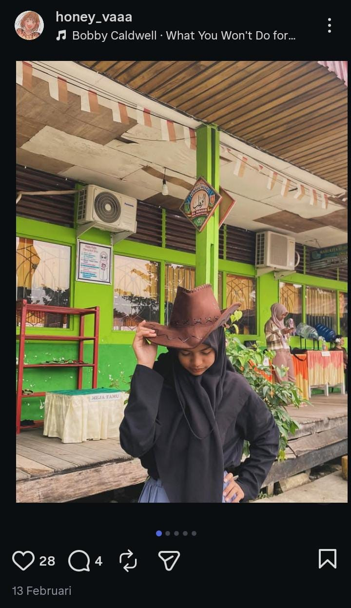

HBD nyakk, sedikit ucapan dan doa dari aing dan baskara
Semoga tak patah hati, waras aman sentosa
S'moga tak disalahkan macam narapidana
tahun ini nyentuh berapa nih???🤔, 17? 18? 19? or 20?🧐, wthever lah nyak idc🥱, gitu aja ucapan aing yahh sibuk ni nak nonton film dulu byeeee👌 note : pls wait for the song plsss🙇